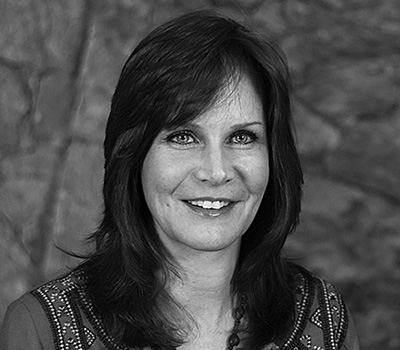
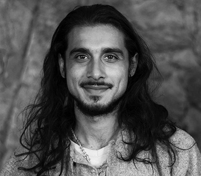
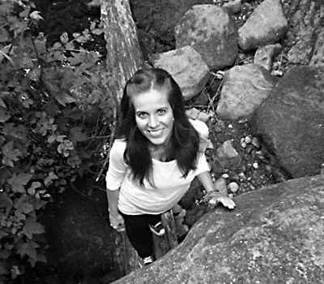

We help youth to discover an authentic identity that is rooted in the wisdom of their own hearts; to hear the inner voice that guides them to their unique gifts and expression of who they are. Guided by our local and international leaders, teens learn to trust themselves, develop self-reliance, and learn the joys of living a balanced life.
We are a non-profit organization from Vancouver, Canada, that is committed to supporting youth in taking a journey into their hearts to discover who they are through modern rites of passage.
-
Ela Rezmer
- Founder & Parent Journey Co-leader -
Meet Ela -
Catherine Tremblay
- Director & Teen Journey Leader -
Meet Catherine -
Dr. Devon Christie
- Director & Teen Journey Leader -
Meet Devon -
Helen Tomei
- Director -
Meet Helen -
Jonathan Bean
- Director & Teen Journey Leader -
Learn More -
Zamir Dhanji
- Director & Teen Journey Leader -
Meet Zamir -
Buckman Coe
- Teen Journey Leader -
Meet Buckman -
Eli Arjan
- Teen Journey Leader -
Meet Eli -
Jacky Essombe
- Teen Journey Leader -
Meet Jacky -
Joé Tessier
- Teen Journey Leader -
Meet Joé
-
Kristen Rose
- Teen Journey Leader -
Meet Kirsten -
Michele Labelle
- Teen Journey Leader -
Meet Michele -
Mahara Brenna
- Parent Journey Co-leader -
Meet Mahara -
Sasha Cuff
- Teen Journey Leader -
Meet Sasha